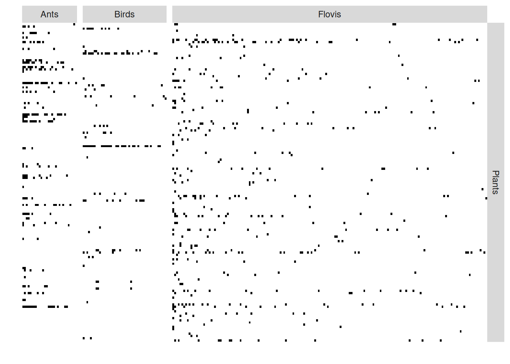

install.packages("sbm")Tutorial on Multipartite block models
April 2024
0.Requirements
This tutorial illustrates the use of block models for the analysis of (ecological) multipartite network. Is is mainly based on a vignette of the package sbm . The package is on the CRAN. Its development version is on Github. It as been installed earlier during the week.
library(sbm)
library(ggplot2)1. What if I have more than 2 types of nodes?
The sbm package is able to handle multipartite networks, meaning that they involve more that two types of nodes and intra and inter groups connections. We analyse the data from Dáttilo et al. (2016) with the method proposed by Bar-Hen, Barbillon, and Donnet (2022).
data(multipartiteEcologicalNetwork)
Net <- multipartiteEcologicalNetwork
type = "bipartite"
model = "bernoulli"
directed = FALSE
PlantFlovis <- defineSBM(Net$Inc_plant_flovis, model, type, directed, dimLabels = c("Plants",
"Flovis"))
PlantAnt <- defineSBM(Net$Inc_plant_ant, model, type, directed, dimLabels = c("Plants",
"Ants"))
PlantBird <- defineSBM(Net$Inc_plant_bird, model, type, directed, dimLabels = c("Plants",
"Birds"))
plotMyMultipartiteMatrix(list(PlantFlovis, PlantAnt, PlantBird))
We can also find block of species
data(multipartiteEcologicalNetwork)
estimOptions = list(initBM = FALSE)
listSBM <- list(PlantFlovis, PlantAnt, PlantBird)
myMSBM <- estimateMultipartiteSBM(listSBM, estimOptions)
#> [1] "------------Nb of entities in each functional group--------------"
#> Plants Flovis Ants Birds
#> 141 173 30 46
#> [1] "------------Probability distributions on each network--------------"
#> [1] "bernoulli" "bernoulli" "bernoulli"
#> [1] "-------------------------------------------------------------------"
#> [1] " ------ Searching the numbers of blocks starting from [ 1 1 1 1 ] blocks"
#> [1] "ICL : -3582.35 . Nb of blocks: [ 1 1 1 1 ]"
#> [1] "ICL : -3358.85 . Nb of blocks: [ 2 1 1 1 ]"
#> [1] "ICL : -3216.14 . Nb of blocks: [ 3 1 1 1 ]"
#> [1] "ICL : -3128.29 . Nb of blocks: [ 4 1 1 1 ]"
#> [1] "ICL : -3071.37 . Nb of blocks: [ 5 1 1 1 ]"
#> [1] "ICL : -3017.65 . Nb of blocks: [ 5 2 1 1 ]"
#> [1] "ICL : -2981.16 . Nb of blocks: [ 5 2 2 1 ]"
#> [1] "ICL : -2965.54 . Nb of blocks: [ 6 2 2 1 ]"
#> [1] "ICL : -2961.9 . Nb of blocks: [ 7 2 2 1 ]"
#> [1] "Best model------ ICL : -2961.9 . Nb of clusters: [ 7 2 2 1 ] for [ Plants , Flovis , Ants , Birds ] respectively"plot(myMSBM) These options are not included in the Shiny application yet.
References
Bar-Hen, Avner, Pierre Barbillon, and Sophie Donnet. 2022. “Block Models for Generalized Multipartite Networks: Applications in Ecology and Ethnobiology.” Statistical Modelling 22 (4): 273–96. https://doi.org/10.1177/1471082X20963254.
Dáttilo, Wesley, Nubia Lara-Rodrı́guez, Pedro Jordano, Paulo R. Guimarães, John N. Thompson, Robert J. Marquis, Lucas P. Medeiros, Raul Ortiz-Pulido, Maria A. Marcos-Garcı́a, and Victor Rico-Gray. 2016. “Unravelling Darwin’s Entangled Bank: Architecture and Robustness of Mutualistic Networks with Multiple Interaction Types.” Proceedings of the Royal Society of London B: Biological Sciences 283 (1843).